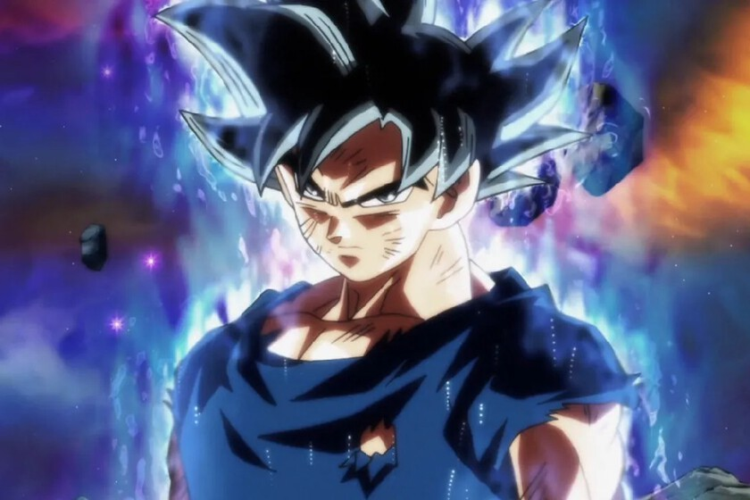

Ultra Instinto es la técnica más avanzada en Dragon Ball Super. El personaje que sabe dominarlo como nuestro héroe Goku tiene su cuerpo convertido en un elemento externo a su conciencia. Esta técnica tiene muchas ventajas porque todos los pensamientos del usuario no interfieren en el combate. Ninguna emoción puede perturbar la batalla.
